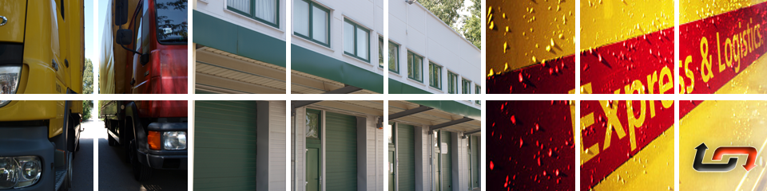
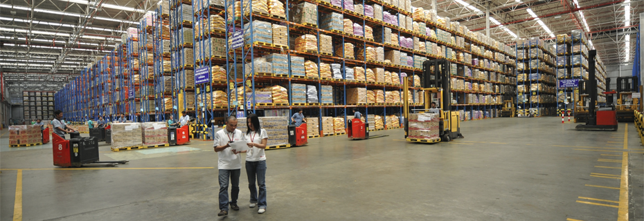

<!DOCTYPE html><!--[if lt IE 7]><html class="no-js ie ie6 lt-ie7 lt-ie8 lt-ie9 lt-ie10"><![endif]-->
<!--[if IE 7]>   <html class="no-js ie ie7 lt-ie8 lt-ie9 lt-ie10"><![endif]-->
<!--[if IE 8]>   <html class="no-js ie ie8 lt-ie9 lt-ie10"><![endif]-->
<!--[if IE 9]>   <html class="no-js ie ie9 lt-ie10"><![endif]-->
<!--[if gt IE 9]><html class="no-js ie ie10"><![endif]-->
<!--[if !IE]><!--><html class="no-js"><!--<![endif]--><head><meta charset="utf-8"><meta http-equiv="X-UA-Compatible" content="IE=edge,chrome=1"><meta name="viewport" content="width=device-width, initial-scale=1, minimum-scale=1, maximum-scale=1"><title>Artistic &hearts;</title><link rel="apple-touch-icon" href="../images/apple-icons/apple-touch-icon-precomposed.png"><link rel="apple-touch-icon" sizes="57x57" href="../images/apple-icons/apple-touch-icon-57x57-precomposed.png"><link rel="apple-touch-icon" sizes="72x72" href="../images/apple-icons/apple-touch-icon-72x72-precomposed.png"><link rel="apple-touch-icon" sizes="114x114" href="../images/apple-icons/apple-touch-icon-114x114-precomposed.png"><link rel="apple-touch-icon" sizes="144x144" href="../images/apple-icons/apple-touch-icon-144x144-precomposed.png"><meta name="msapplication-TileImage" content="../images/apple-icons/apple-touch-icon-144x144-precomposed.png"><meta name="msapplication-TileColor" content="#ffffff"><!-- Modernizr --><script src="js/libs/modernizr-2.6.2.min.js"></script><!-- jQuery --><script type="text/javascript" src="js/libs/jquery-1.9.1.min.js"></script><!-- framework css --><link type="text/css" rel="stylesheet" href="css/global.css"><!-- USER css--><link type="text/css" rel="stylesheet" href="css/style.css"><!--[if IE]><link type="text/css" rel="stylesheet" href="css/global-ie.css"><![endif]--><script type="text/javascript">// extend Modernizr to have datauri test
(function(){
  var datauri = new Image();
  datauri.onerror = function() {
    Modernizr.addTest('datauri', function () { return false; });
  };
  datauri.onload = function() {
    Modernizr.addTest('datauri', function () { return (datauri.width == 1 && datauri.height == 1); });
    Modernizr.load({
      test: Modernizr.datauri,
      nope: './css/no-datauri.css'
    });
  };
  datauri.src = "data:image/gif;base64,R0lGODlhAQABAIAAAAAAAP///ywAAAAAAQABAAACAUwAOw==";
})();
// SVG support?
Modernizr.load({
  test: Modernizr.inlinesvg,
  yep: [
    './css/social-icons-svg.css'
  ],
  nope: [
    './css/social-icons-png.css'
  ]
});
// polyfill for HTML5 placeholders
Modernizr.load({
  test: Modernizr.input.placeholder,
  nope: [
    './css/placeholder_polyfill.min.css',
    './js/libs/placeholder_polyfill.jquery.js'
  ]
});


</script></head></html><body><header class="padded"><div class="container"><div class="container two seventh logo"></div><div class="container four seventh"></div><div class="container one seventh"><div class="container langmenu align-center padded"></div></div></div><div class="container"><nav class="nav inline menu mainmenu padded centered"><ul><li><a href="./home.html"> Startseite</a></li><li><a href="./about_us.html"> Über Uns</a></li><li><a href="./services.html">Dienstleistungen</a></li><li><a href="./home.html"> Offertanfrage</a></li><li><a href="./home.html"> LKW Flotte</a></li><li><a href="./home.html"> Fahzeugverfolgung</a></li><li><a href="./home.html"> Kontakt</a></li><li><a href="./home.html"> Links/Dokumente</a></li></ul></nav></div></header><article class="container content padded"><h2 class="align-center">Firmenvorstellung</h2><p class="align-center"></p><p></p><p> Die Spedition TLS Express wurde von dem jungen, dynamischen und zuverlässigen Unternehmer mit 10 Jahre Berufserfahrung im Bereich Logistik gegründet. Sein Team erschliesst durch breites Wissen und grosser Anzahl an geschäftlichen Beziehungen das Vertrauen seiner Kunden im Bereich nationale und internationale Transporte, Spedition und Logistik.</p><p> Die Aufgaben werden mit eigenen Mitteln und mit der Einbeziehung von mehr als 100 Subunternehmern erledigt. Der Fuhrpark, der sowohl aus 1,5-Tonner Sprintern als auch vom 13,6 Meter langem (24-Tonner) Sattelschlepper besteht, ermöglicht eine Kapazität vom 1-8 Europaletten bis 33-36 Europaletten. In unserem Büro in Budapest stehen unsere mehrsprachigen Kollegen, die Deutsch, Englisch, Rumänisch und Ungarisch auch sprechen können für Sie gerne zur Verfügung.</p><p> Wir möchten mit unseren Dienstleistungen auch die individuellen Wünsche unserer Auftraggeber flexibel, mit individuellen Lösungen für Speditionsproblemen erfüllen.</p><p><strong>Unsere Leistungen:</strong></p><ul><li> schnelle Verwaltung</li><li> Planung von optimalen Verkehrswegen</li><li> Auswahl geeigneter Transportmitteln</li><li> Sendungsverfolgung</li><li> Fachberatung</li><li> Tägliche Statusmeldungen für unsere Auftraggeber</li></ul><p>Als die Jahre vergingen, hat das vom engagierten Team ausgebaute Netz sich verbreitet, die Kundenanzahl auf dem ganzen Kontinent schrittweise zugenommen. So verbindet heute das Netzwerk von TLS Express Kft. mehr als 20 Länder und Gebite miteinander, vor allem osteuropäische Länder, wie Rumänien, Bulgarien, Griechenland, Türkei und Moldavien, mit den westeuropäischen Länder.</p><p>Das Unternehmen verfügt über jahrelange Erfahrungen im Speditionsgeschäft in die osteuropäische Länder, in dem das Unternehmen nachhaltige Wettbewerbsvorteile erreicht hat. Das Unternehmen kann eine breite Palette von Warentransporten durchführen, wie z.B.: Tiefkühlware, Medizintransporte, Transporte von Elektrogeräten.</p><p>Die TLS Gesellschaft bietet eine Vielzahl von zuverlässigen, proaktiven Dienstleistungen für alle Transporte ihrer Partner an, die durch die Marktkenntnis des lokalen Marktes gesichert werden. Wir sind stolz darauf, dass der Firmenname TLS Express Kft. das Engagement gegenüber den Kunden bedeutet.</p><p>Die Entwicklung des Unternehmens erfolgt durch unsere Begeisterung, unser Erfolg basiert auf den präzisen Dienstleistungen, die wir unseren Kunden anbieten. Unsere Partner, mit denen wir eine langjahrige, vertrauenswürdige Geschäftsbeziehung haben, und von denen ein Teil internationale Konzerne und klein – und mittelständische Unternehmen sind, beauftragen uns jeden Tag mit mehreren Gütertransporten.</p><p>Die Gesellschaft bemüht sich um die Erschaffung einer stabilen wirtschaftlichen Lage, die auch im Interesse des Inhabers steht, deshalb verfolgt er auch die Entwicklung der finanziellen Ziele.</p><p>Lassen Sie sich von unserer qualitativen Arbeit und Zuverlässigkeit überzeugen. Wir hoffen Sie in der Zukunft zu unseren zufriedenen Kunden zählen zu dürfen.</p><p>Fordern Sie Ihr persönliches kostenloses Angebot an! Für weitere Informationen und Fragen stehen wir Ihnen gerne zur</p><p><strong>Verfügung unter:</strong></p><p>Web: www.tlsexpress.eu</p><p><table><tbody><tr><td>Fax:</td><td>+361-257-0708</td><td></td></tr><tr><td>Tréfás Zsolt:</td><td>+3670-324-0103</td><td>zsolt.trefas@tlsexpress.eu</td></tr><tr><td>Sebők Zoltán</td><td>+3670-324-0104</td><td>zoltan.sebok@tlsexpress.eu</td></tr><tr><td>Cseh Zsuzsa</td><td>+3670-326-0455</td><td>zsuzsa.cseh@tlsexpress.eu</td></tr></tbody></table></p></article><footer class="footer main_footer"><div class="container padded"><div class="row"><div class="one third one-up-small-tablet one-up-mobile padded align-left pull-left"><h3>Dienstleistungen</h3><p></p><p>Internationale Transporte</p><p>Inland Transport</p><p>Logistics</p></div><div class="one third padded align-center"></div><div class="one third one-up-small-tablet one-up-mobile padded align-right pull-right"><h3>Kontakt</h3><p><strong>Tel:</strong>  +3670-324-0103</p><p><strong>Fax:</strong> +36 1 2570708</p><p><strong>Email:</strong>  zsolt.trefas@tlsexpress.eu</p><p><strong>Adresse:</strong>  1173 Budapest Összekötő utca 1.</p></div></div><div class="container padded main_footer_menu desktop-only"><div class="row"><div class="one sixth padded"><p>© TLSExpress Kft 2013</p></div><div class="five sixth"><nav class="nav inline menu padded fmenu"><ul><li><a href="./home.html"> Startseite</a></li><li><a href="./home.html"> Über Uns</a></li><li><a href="./home.html">Dienstleistungen</a></li><li><a href="./home.html"> Offertanfrage</a></li><li><a href="./home.html"> LKW Flotte</a></li><li><a href="./home.html"> Fahzeugverfolgung</a></li><li><a href="./home.html"> Kontakt</a></li><li><a href="./home.html"> Links/Dokumente</a></li></ul></nav></div></div></div></div></footer></body><!-- scripts--><script type="text/javascript" src="js/plugins/jquery.cycle2.js"></script><script type="text/javascript" src="js/plugins/jquery.magnific-popup.js"></script><script type="text/javascript" src="js/groundwork.all.js"></script><!-- google analytics--><script type="text/javascript">var _gaq = _gaq || [];
_gaq.push(['_setAccount', 'UA-XXXXXXXX-X']);
_gaq.push(['_trackPageview']);
(function() {
var ga = document.createElement('script'); ga.type = 'text/javascript'; ga.async = true;
ga.src = ('https:' == document.location.protocol ? 'https://ssl' : 'http://www') + '.google-analytics.com/ga.js';
var s = document.getElementsByTagName('script')[0]; s.parentNode.insertBefore(ga, s);
})();</script>